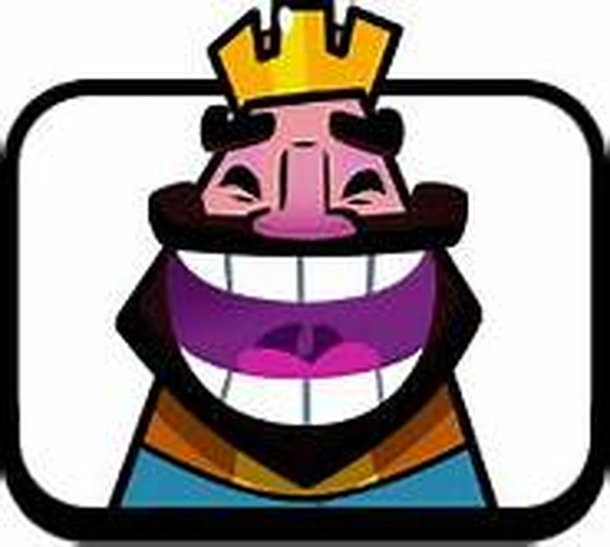

The most controversial topic yet.
The biggest question ever is this, 'why do i hate women'.
Good question.
It goes back 5 years...to 2017.
Summer Holidays, 2017.
Im sitting on the couch and peacefully playing Clash Royale with my friend. Yes, i am an OG player. I was so good at the game, i was ready to grind to hog mountain. Disaster struck, my friend told me to play with his sister, 4 years younger than me.
I laughed and got into the match. This moment still gives me PTSD, it was not pekka's playhouse...it in fact was...SPELL FACTORY. I tried to remain calm but i couldnt, i had the feeling that shes a woman and i can beat her easily. I was wrong. I got pasted by her.
I would have left it there and accepted my first ever defeat to a woman but no, she used the HE HE HE HAW EMOTE, the most toxic and outrageous emote in the whole game.
It was at this moment i realized, i cannot lose to a woman again.
This PTSD has affected me so much that whenever i queue in Valorant and hear a woman i end up dodging the game because afterall, if i ended up with a worse performance than her...i would be left broken.
